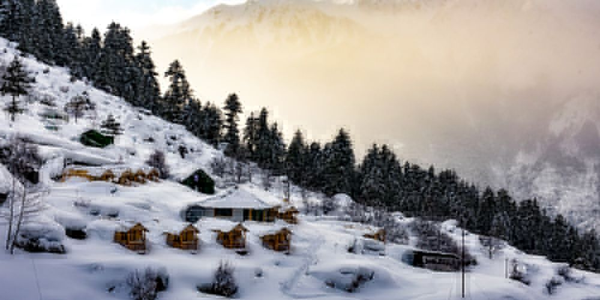
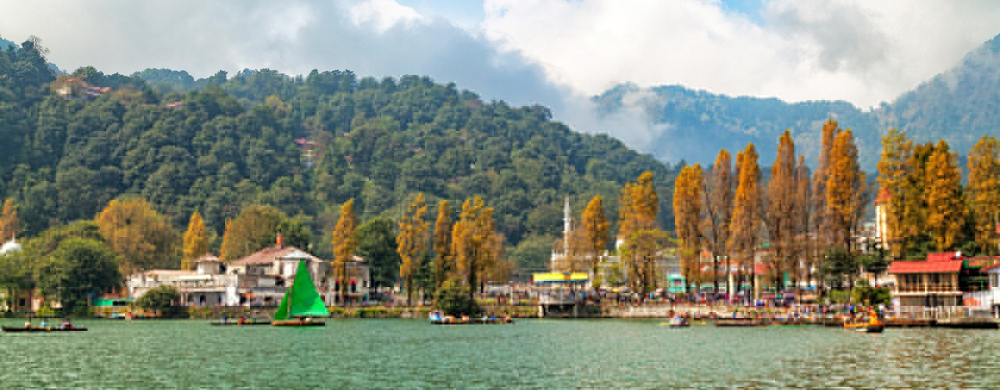
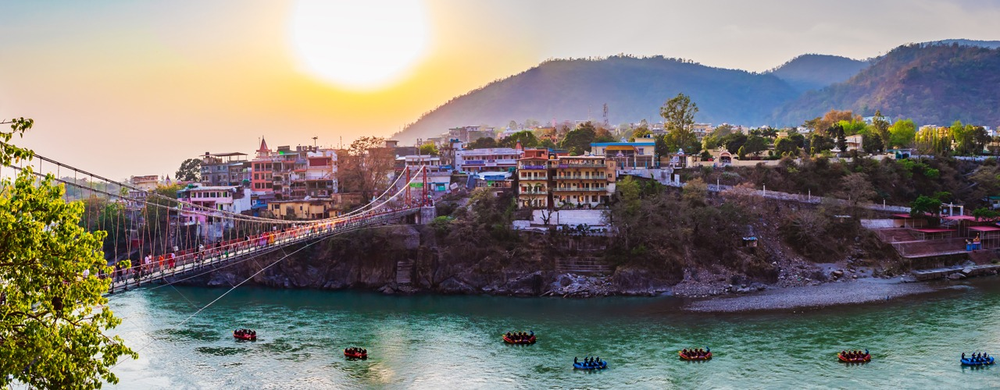
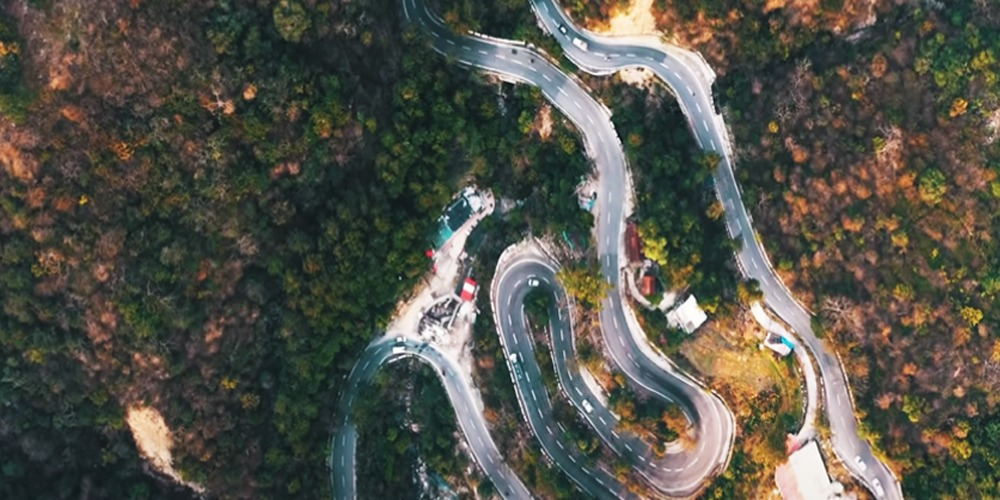

Boasting of enchanting view of the Himalayas, and cultural ethos that speaks of simplistic living amidst nature and harmony – Uttarakhand is a land of sublime natural beauty and serene spirituality. And to top it, is the availability of numerous cant-miss experiences ranging from water sports to the ashrams where you can connect with your inner self. Uttarakhand has everything in store for any tourist who is daring enough to face heights of the Himalayas, crazy enough to sail on the snow, and keen enough to explore himself/herself. With some magnificent places to visit in Uttarakhand, there’s no reason you should be a part of the urban grind for more than 2 months at a stretch! ,
AULI
The small yet picture-perfect town of Auli is India's premier ski resort destination. Originally developed as a paramilitary base, Auli's skiing slopes are popular among tourists and professionals alike. In winter, Auli hosts several snow adventure events. You can also take skiing lessons here Standing at around 2,800 m, and surrounded by acres of oak and coniferous forests, Auli offers panoramic views of some of India’s highest peaks, including the second-highest in the country, Nanda Devi (7,816m). It is also the gateway to the Nanda Devi and the Valley of Flowers National Park, including the Hemkund Sahib gurdwara, and popular trekking destinations such as Gorson Bugyal, Pangerchulla Summit, and Tapovan can be accessed through Auli. Besides Auli, Uttarakhand has several other skiing destinations, like Dayara Bugyal, Munsiyari and Mundali. BEST TIME TO VISIT For skiing enthusiasts, January to March is the best time to visit. For nature lovers, October to March is the most appropriate time. Badrinath is located at an elevation of around 3,100 m. Located in the Garhwal Himalayas, on the banks of the Alaknanda river, this sacred town lies between Nar and Narayana mountain ranges. The temple is believed to have been established by sage Adi Shankaracharya in the 8th century. With Lord Vishnu as its presiding deity, the temple remains open for six months in a year. In winter it becomes inaccessible due to heavy snowfall. .
NAINITAL
Nainital, the charming Himalayan lake town, is a picture-postcard perfect hill-station and one of the most popular in Northern India. Commonly known as the ‘Lake District’, Nainital is nestled high up in the Kumaon Himalayas at an altitude of around 2,000 m above sea level. This beautiful town in surrounded by seven hills, popularly known as ‘Sapta-Shring’ – Ayarpata, Deopata, Handi-Bandi, Naina, Alma, Lariya-Kanta and Sher-Ka-Danda. The majestic mountains and the sparkling waters of the lake add an immense lot to the beauty of the town. The town is centred around the emerald mountain lake Naini, which on most days is dotted with colourful sailboats. According to mythology, the lake is believed to have been formed when the eyes of goddess “Sati” fell at this spot while her body was being carried by Lord Shiva after her death..
RISHIKESH
against the backdrop of the Himalayas and with the pristine Ganga flowing through it, the ancient town of Rishikesh is one of the major tourist and pilgrimage hubs in northern India, where people from across the world arrive in search of peace. Rishikesh is commonly referred to as the ‘yoga capital of the world’ and rightly so. The destination is abuzz with visitors, who come here to learn yoga and meditation. Rishikesh has numerous ashrams, some of which are internationally recognised as centres of philosophical studies, yoga and other ancient Indian traditions of wellness. The Uttarakhand Tourism Development Board organises the annual International Yog Festival (IYF) here, which attracts thousands of yoga enthusiasts. There are several legends associated with Rishikesh. It is said Rishikesh finds a mention in the ancient text Skanda Purana, and in the epic Ramayana. It is said Lord Rama, along with his brothers, came to Rishikesh to do penance after killing Ravana.
MUSSOORIE
Mussoorie, also known as Queen of the Hills, is among the most popular hill stations of the country. A Britisher, Captain Frederick Young, accompanied by an official named FJ Shore, had climbed up the hill from the Doon valley in 1827 and found this ridge offering great views and a salubrious climate. This visit laid the foundation for this grand hill station. A captivating paradise for leisure travellers and honeymooners, it is a perfect summer resort. Located on a 15-km-long horseshoe ridge with the grand Himalayas as a backdrop, Mussoorie spreads across at a height of 2,000 m above sea level. From this vantage point, it offers scenic views of Himalayas peaks in Western Garhwal. Many famous personalities have made Mussoorie their home – most notable being authors Ruskin Bond and Bill Aitken. Filmstar Victor Banerjee resides in Mussoorie while deceased filmstar Tom Alter was born and brought up here. In the 1960s filmstar Prem Nath had his house here while the son of Dev Anand studied in Woodstock school. Cricketers Sachin Tendulkar and Mahendra Singh Dhoni are frequent visitors to this hill resort. Best time to go The best time to visit Mussoorie is during summers, as it offers respite from the scorching summer heat. However, if you are looking for a secluded holiday, come here during winters to witness the snowfall.
Leave a comment